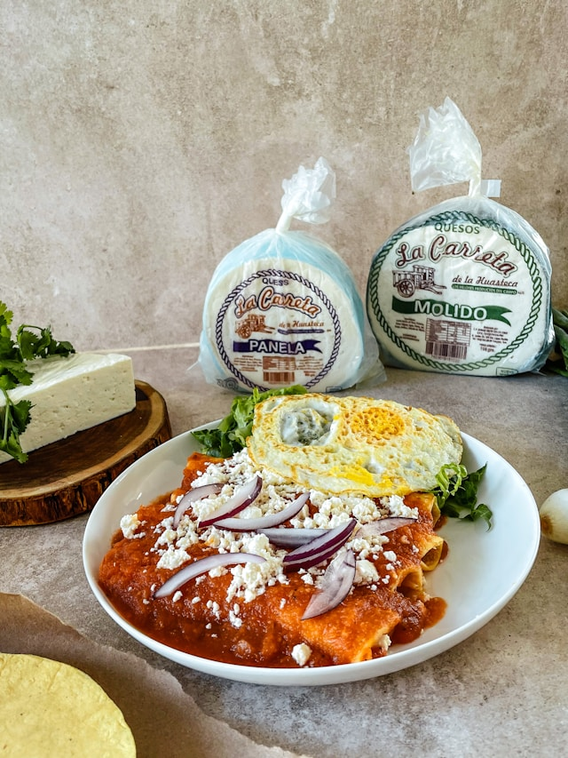

Enchiladas

Description:
These easy enchiladas are a quick, comforting meal made by filling tortillas with chicken, beef, or beans, rolling them up,
covering them in enchilada sauce, and baking with melted cheddar or Monterey Jack until warm and bubbly.
Ingredients:
- Tortillas(corn)
- Cooked shredded chicken, ground beef, or beans
- Enchilada sauce
- Shredded cheddar or Monterey Jack
- Onion
- Garlic
- olive oil
- Salt and pepper
Steps:
- Preheat your oven to 375°F (190°C) and lightly grease a baking dish.
- Warm the tortillas slightly so they’re soft and easy to roll.
- In a pan, heat a little olive oil and cook any onions or garlic if using, then mix in your cooked chicken, beef, or beans.
- Spoon the filling onto each tortilla, sprinkle a bit of shredded cheddar or Monterey Jack, then roll them up tightly.
- Place the rolled tortillas seam-side down in the baking dish.
- Pour enchilada sauce evenly over the top and sprinkle with more cheese.
- Bake for 15–20 minutes, or until the cheese is melted and bubbly.
- Let cool slightly, then serve warm.